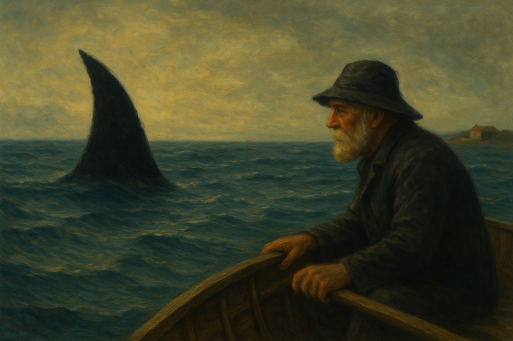

A tenger sok rejtelmes dolgot bujdosik a víz felszíne alatt... de ez talán életem leg rejtelmesebb rejtvénye!
Sok mindent tapasztaltam az évek alatt. Bálnák vándorlását, borzongó vízeket, kiméletlen szeleket, a tenger nyugalmát és legnagyobb haragját. De az egyik legfurább dolgai nem rég kezdtek el felbukanni. A legelső amire emlkészem hogy furcsáltam az halk zugások a víz felszine alatt, talán zene vagy éneklés? Nem is tudom pontossan, de olyan mintha valaki odalent egy saját nyelven beszélne. Ez mindig hajnalban szokott megtöténni a legelső alkalommal mikor a nap felbukan a horizonton. Mintha automatikus lenn? Talán csak ösztön? Vagy már a fene sem tudja, de biztos vagyok benne hogy nem vagoyk bolond!
Egyszer egy tavaszi délben horgásztam a mélyebb részen és egyszer csak arra lettem figyelmes hogy az összes melettem lévő hal egyszer csak eltünik egy hatalmas fekete folt között. A folt teljessen körbe ölelte a csonakomat és nem láttam a víz felszín allá. Amikor már azt hittem elnyel a sötét bugyorgó víz egy hatalmas úszony nött ki a víz felszíne alól, gyönyörű hosszű fekete pikelyes, mese szépen csilant meg a fényben. Mire észbe tudtam volna kapni újból le merűlt és eltünt a mélységben. Soha nem láttam újra, de azóta néha mintha a távólban a szemem sarkából látnám azt az árnyékot, soha nem az úszonyt, csak az árnyékot és valami kéken fénylett, mintha talán szemek vagy kristályok, nem talán egyik sem, viszont mikor oda nézek nincs ott semmi!

Más érdekesség is történt. Példáúl a mi nap...
... kint voltam a tengerren és kifogtam egy egész bicikli vázat, a vas elkezdet szikrázni, csillogni mintha pikelyek nőttek volna a vázra. Aztán mikor lenéztem a víz alá, akkor egy nagy rázkodást éreztem és mire vissza néztem a biciklire akkor már csak a víz tocsa maradt a hajó ajábban.
Aztán ott volt az is mikor a mély vízéböl egy női cipelő alakját emeltem ki. Elengettem volna akkor és ott egyböl, de a kiváncsiság megfogott és kiemeltem a vízből. Viszont mikor a kezembe vettem akkor egy gyönyrű szép ezüst pikelyű hal volt a két kezemben. Én mondom a tenger szeret viccelödni.
Végül van mikkor egyedül vagyok a gondolataimmal akkor halk sutogást hallok a víz alól, mintha a kedvesemmet Ilonkát hallanám és hogy ő hivogatna a kedves szavaival. Na aztán meg ott van amiket néha láttok, csak akkor amikor a hold kitisztitja a zajos vízet és kritály tisztán át lehet látni a mélybe. Akkor mintha valami építmény lenne oda lent a méylben, és mindig mikor látom valami történik vele, mintha valaki folyamatossan építené. De a legfurább ebben hogy volt egy alkalom mikor ezt az épitményt úgy láttam hogy felhős volt az ég és a hold akkor teljesen elvolt fedve a felhők mögött. Akkor és ott viszont egy hatalmas kékfény kör alakban kivetűlt a víz felszínére és át tudtam rajta látni. Gyönyörű halak és rajok usztak békésen.